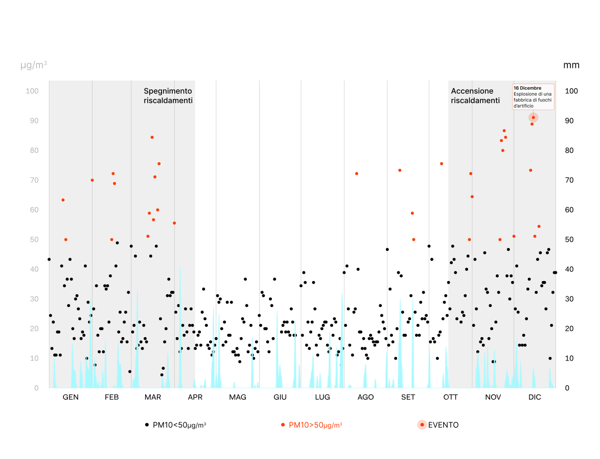
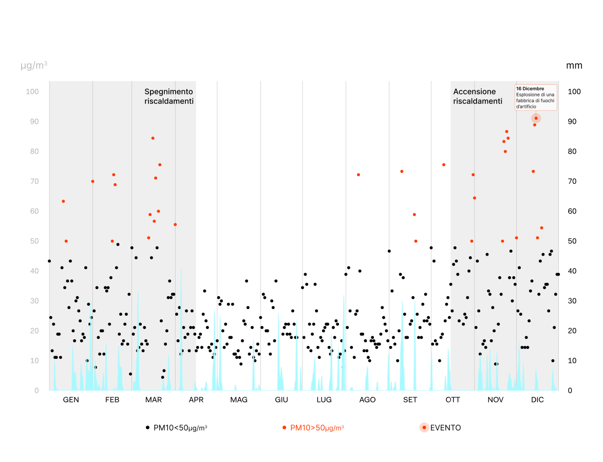

2013
+57
giorni oltre il limite giornaliero
2014
+23
giorni oltre il limite giornaliero
2015
+38
giorni oltre il limite giornaliero
2016
+33
giorni oltre il limite giornaliero
2017
+40
giorni oltre il limite giornaliero
2018
+18
giorni oltre il limite giornaliero
2019
+33
giorni oltre il limite giornaliero
2020
+42
giorni oltre il limite giornaliero
2021
+29
giorni oltre il limite giornaliero
2022
+33
giorni oltre il limite giornaliero

 



 mezz'aria
mezz'aria